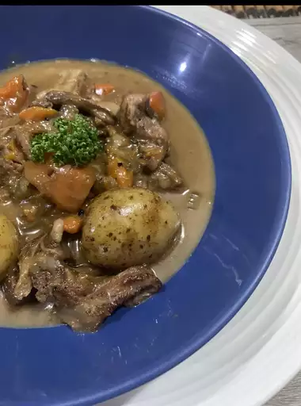

Chef John's Irish Stew

Description
How to make the perfect Irish Stew
Ingredients
- 3 pounds lamb shoulder chops
- salt and ground black pepper to taste
- 1 tablespoon vegetable oil
- 1 onion, chopped
- 1 tablespoon butter
- Season lamb shoulder chops with salt and black pepper.
-
Heat oil in a large heavy skillet over high heat. Working in batches, cook
lamb shoulder chops until browned on both sides, 3 to 5 minutes per side.
Transfer chops to a stock pot.
-
Cook and stir onion with a pinch of salt in the same skillet over medium
heat until slightly softened and edges are browning, about 5 minutes. Stir
butter into onion until melted; add flour and stir until onions are coated,
about 1 minute.
-
Pour stock into onion mixture; bring to a boil, add rosemary, and stir until
mixture thickens, 5 to 10 minutes.
-
Remove meat from bones; discard bones and any pieces of fat. Stir meat back
into stew. Stir green onions into stew and season with salt and pepper to
taste.
Return to the index page